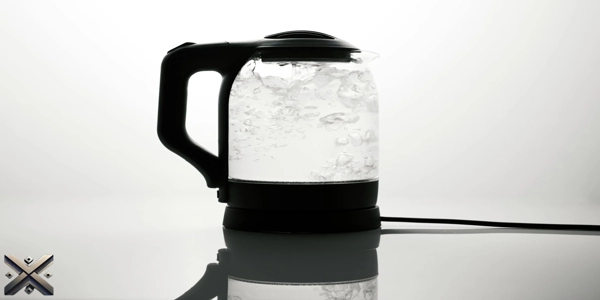
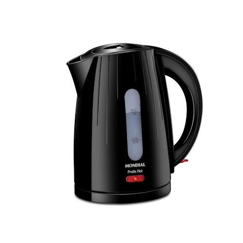
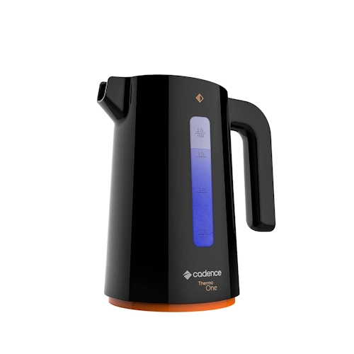
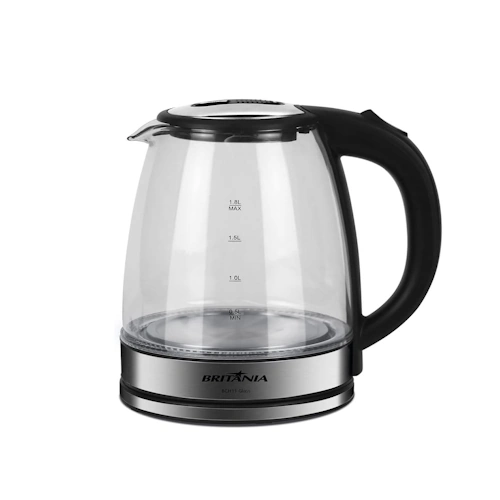
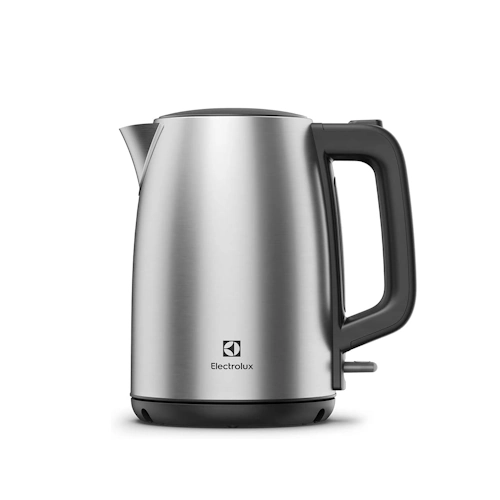
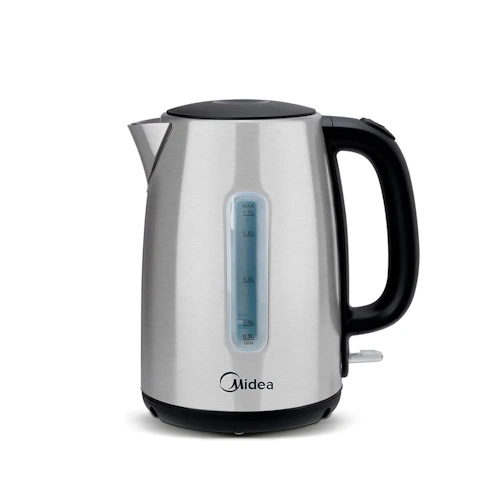

As jarras elétricas são itens indispensáveis para quem busca praticidade no dia a dia. Com elas, você aquece a água de forma rápida e segura, seja para preparar um chá, café ou até mesmo agilizar o cozimento de alimentos. Em 2025, o mercado traz diversas opções, com modelos que variam em capacidade, material e funcionalidades extras.
Pensando nisso, reunimos as cinco melhores jarras elétricas do ano, destacando seus diferenciais e custo-benefício. Avaliamos critérios como potência, segurança, design e eficiência para ajudar você na escolha ideal. Confira nosso ranking e descubra qual jarra elétrica se encaixa melhor nas suas necessidades.

A jarra elétrica é um eletrodoméstico essencial para quem precisa de água quente rapidamente. Seja para preparar café, chá, chimarrão ou até macarrão instantâneo, ela agiliza o processo e traz mais segurança.
A jarra elétrica ferve a água em poucos minutos, consumindo menos energia do que um fogão. Além disso, seu desligamento automático evita desperdício e garante segurança.
Disponível em inox, vidro ou plástico, cada tipo de jarra tem suas vantagens. As de inox são mais duráveis, as de vidro oferecem um design sofisticado, e as de plástico são mais leves e acessíveis.
Algumas jarras elétricas possuem controle de temperatura, filtros embutidos e sistemas de segurança contra superaquecimento. Essas funções tornam o uso ainda mais conveniente.
Se você busca praticidade, segurança e rapidez para aquecer água, a jarra elétrica é um ótimo investimento. Compacta e eficiente, ela facilita o dia a dia e traz mais comodidade para sua rotina.

Se você busca uma jarra elétrica compacta e acessível, a Mondial Pratic Hot é uma ótima escolha. Com capacidade de 1 litro, aquece a água de forma rápida e silenciosa, além de esterilizar louças. Seu desligamento automático garante segurança e economia de energia. A base giratória 360º e o porta-fio proporcionam mais praticidade no uso e armazenamento. O preço varia entre R$ 140. Além disso, seu design moderno e minimalista combina com qualquer cozinha, trazendo um toque de elegância e sofisticação. O cabo ergonômico facilita o manuseio, evitando derramamentos. O material de alta qualidade proporciona resistência e durabilidade, tornando essa jarra um investimento certeiro.

Com design moderno e indicador de LED, a Cadence Contrast é ideal para quem busca praticidade e estilo. Ferve a água em poucos minutos, facilitando o preparo de bebidas quentes e até ajudando no cozimento de alimentos. Seu sistema portátil permite que a jarra seja retirada da base e levada à mesa com facilidade. Com capacidade de 1,7 litros, seu preço varia entre R$ 104. Um dos diferenciais desse modelo é seu sistema de filtragem, que evita impurezas na água fervida, garantindo mais qualidade para suas bebidas. Seu material resistente a altas temperaturas oferece mais segurança no uso diário, e sua tampa com trava impede vazamentos acidentais.

Se você prefere uma jarra elétrica de vidro, a Britânia Glass é uma excelente opção. Com potência de 1500W e desligamento automático, oferece segurança contra superaquecimento. Seu design transparente e luz indicadora tornam o uso mais intuitivo. A base giratória 360º facilita a manipulação, e sua capacidade de 1,8 litros atende bem às necessidades diárias. O modelo é vendido entre R$ 185. A jarra de vidro confere um toque sofisticado ao ambiente, além de permitir visualizar o processo de aquecimento da água. Outro ponto positivo é sua resistência a choques térmicos, o que aumenta a durabilidade do produto. Seu bico direcionador facilita o despejo da água sem respingos.

Para quem busca uma jarra elétrica de inox, a Electrolux EEK25 é uma das melhores opções. Seu desligamento automático ao atingir 100°C garante segurança. Com capacidade de 1,7 litros, aquece grandes quantidades de água rapidamente. O botão de abertura de tampa facilita o manuseio, enquanto o visor transparente permite acompanhar o nível de água. O preço varia entre R$ 219. Seu acabamento em aço inoxidável evita marcas de dedos e facilita a limpeza, além de trazer um design moderno e sofisticado. A jarra possui um sistema de proteção contra superaquecimento, garantindo maior durabilidade e segurança no uso diário. Seu cabo térmico evita aquecimento excessivo e proporciona mais conforto na hora de servir.

O primeiro lugar vai para a Midea EKA23X2, uma das melhores jarras elétricas custo-benefício de 2025. Com potência de 1500W e termostato Strix, oferece temperatura precisa e segurança. Seu corpo em aço inoxidável garante durabilidade, e a capacidade de 1,7 litros atende bem às necessidades do dia a dia. O modelo também conta com visor de nível de água, desligamento automático e base giratória 360º. O preço varia entre R$ 209. Além disso, seu design sofisticado faz dela uma excelente adição para qualquer cozinha. A jarra aquece a água rapidamente, reduzindo o tempo de espera para preparar suas bebidas. O material interno é resistente a odores e fácil de limpar, garantindo um uso mais higiênico.
Agora que você conhece as melhores jarras elétricas de 2025, qual delas se encaixa melhor nas suas necessidades? Deixe seu comentário e compartilhe com amigos que também estão procurando um modelo prático e eficiente. Lembre-se de considerar não apenas o preço, mas também a funcionalidade e durabilidade do produto. Seja para preparar café, chá ou outras bebidas quentes, uma boa jarra elétrica faz toda a diferença no dia a dia. Escolha a que melhor atende suas expectativas e aproveite toda a praticidade que esses modelos oferecem!